OFC - Confederação de Futebol da Oceania
A OFC é uma das seis confederações continentais de futebol internacional filiadas à FIFA. É a autoridade máxima do futebol na Oceania e organiza as eliminatórias para a Copa do Mundo na região.
.
Membros plenos - Filiado à FIFA e a OFC - (11)
Clubes do Fiji:
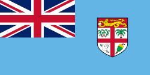
Clubes das Ilhas Cook:
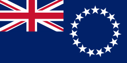
Clubes das Ilhas Salomão:
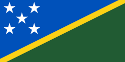
Clubes da Nova Caledônia:
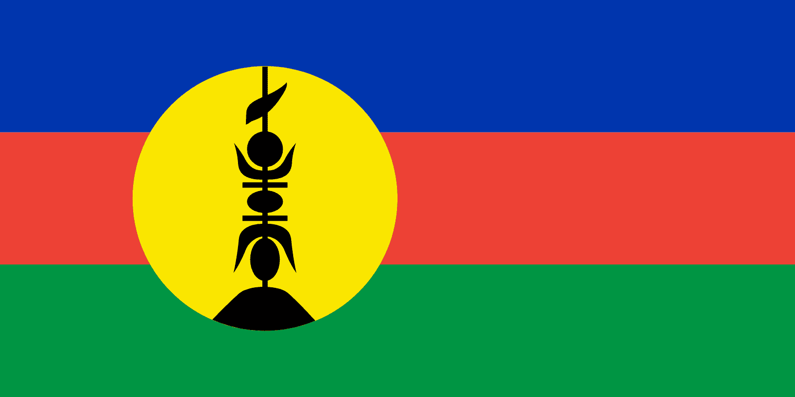
Clubes da Nova Zelândia:
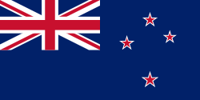
Clubes da Papua-Nova Guiné:
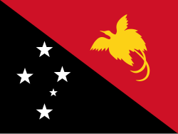
Clubes da Polinésia Francesa (Taití):
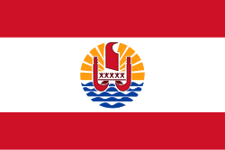
Clubes da Samoa Americana:
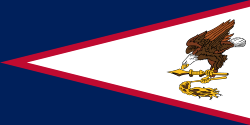
Clubes da Samoa:
Clubes do Tonga:
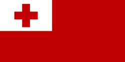
Clubes de Vanuatu:
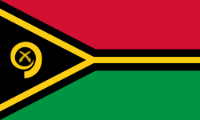
.
Membros associados- Filiado a OFC e não filiados à FIFA - (2)
Clubes das Ilhas Kiribati:
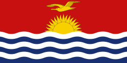
Clubes das Ilhas Tuvalu:
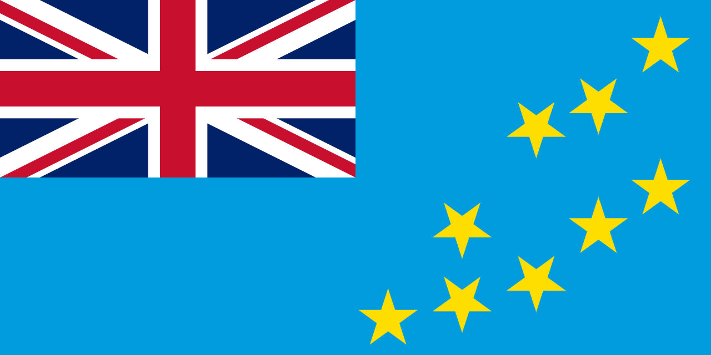